NPCs
Named characters the crew has met, heard of, or should worry about
The Crew's World
The Hive
Goals: Take over all contraband and smuggling (8-clock) � Avenge Roric's murder (6-clock)
Allies: Ministry of Preservation, Dagger Isles Consulate, Church of Ecstasy
Foes: Circle of Flame, The Unseen, The Crows
Notes: Avoids anything supernatural or superstitious. No known connection to the Wraiths � though the Hive wants to buy them out or terminate them. The Unseen and the Hive are structural enemies, which creates friction for the Antiquarians who are Hive-aligned.


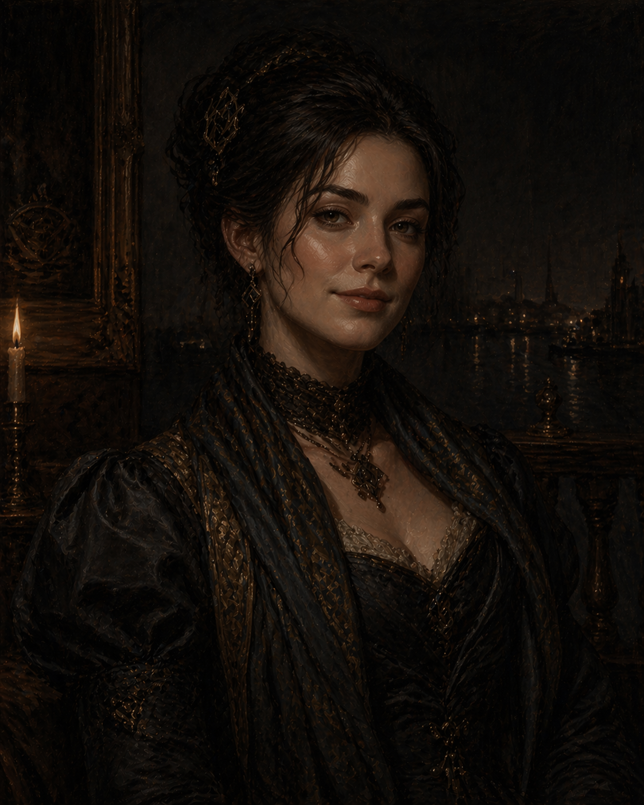
Gondoliers
Goals: Investigate desecrated hollows (8-clock) � Destroy spirit wells (4-clock, ongoing)
Allies: Lampblacks, citizens
Foes: Red Sashes, Spirit Wardens
Notes: Were solving ghost problems before the Spirit Wardens existed � citizens trust them more. They see destroying ghosts as helping them "move on." Currently investigating why spiritless dead bodies (hollows) are being dumped in the canals. The first of every month is Tithesday � gondoliers, sailors, and dockers throw a coin into the harbor.
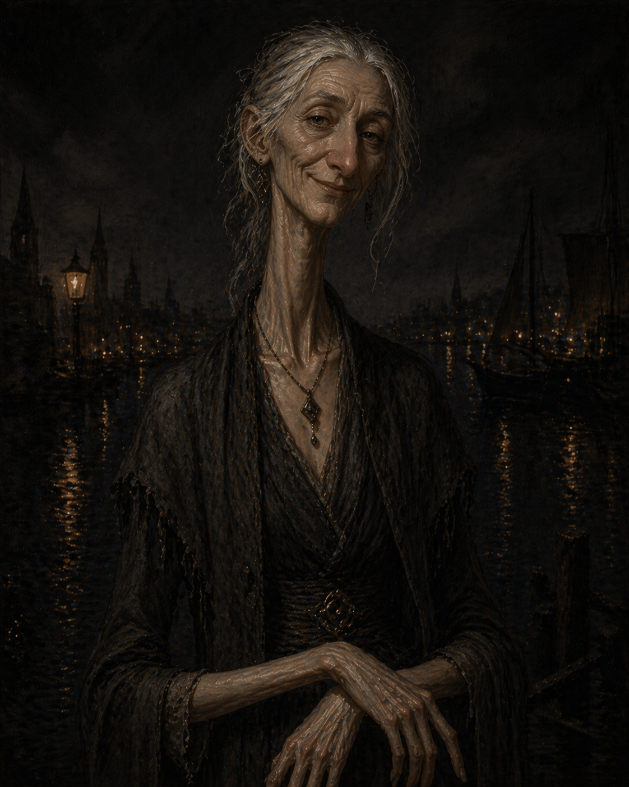


The Grinders
Goals: Raise crew and steal a warship (12-clock) � Fill the war treasury (12-clock)
Allies: Ulf Ironborn, Dockers
Foes: Bluecoats, Imperial Military, Leviathan Hunters, Sailors
Notes: The leviathan blood processing facility in Lockport, north of Skovland, processes 90% of Doskvol's leviathan blood. Mutation rain, horrific working conditions, mass injuries. The Grinders want a warship to go back and burn it down. Were at -1 with the crew; Victor bonded with Hutton and they're now square.
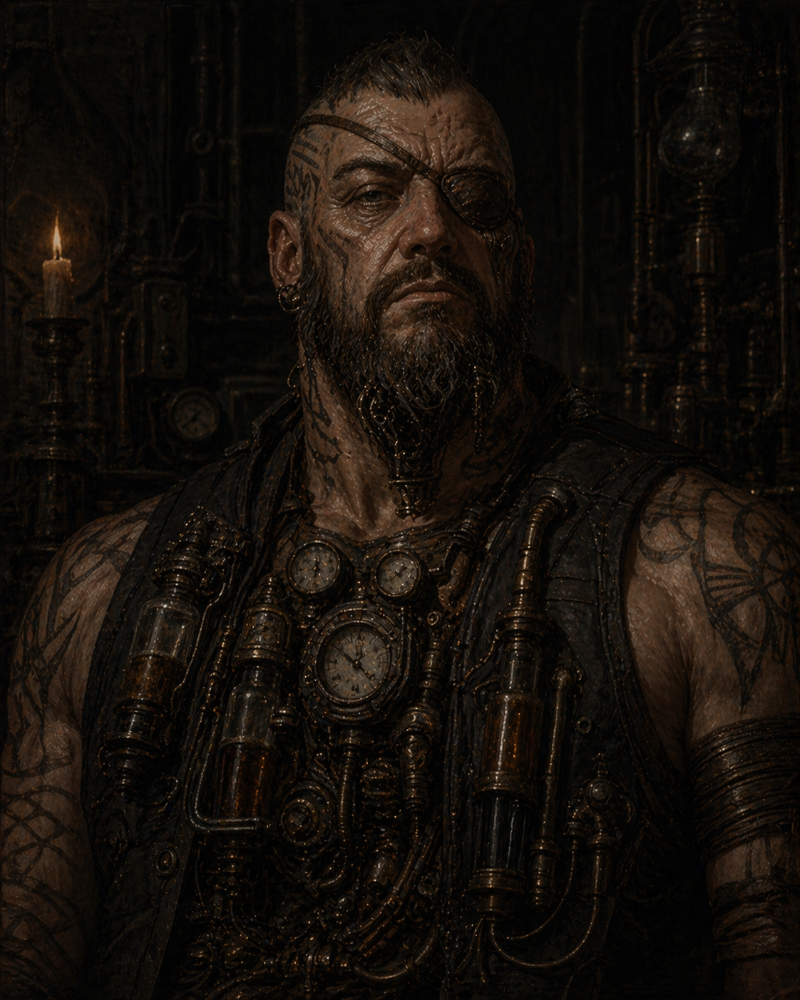
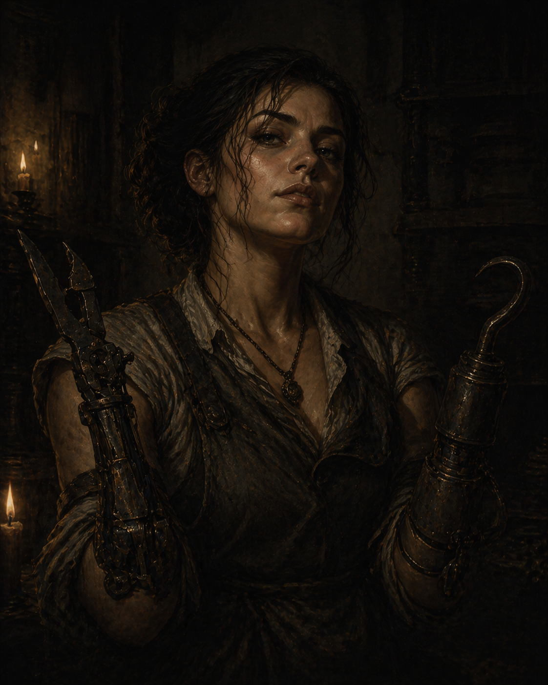
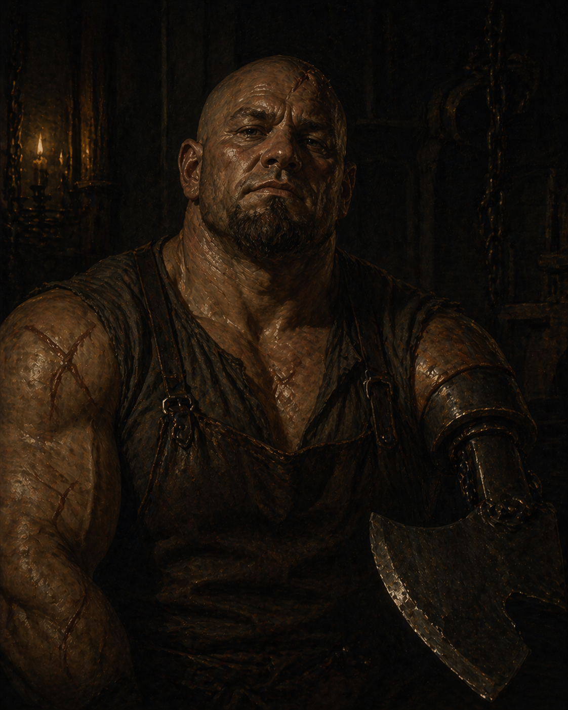
The Wraiths
Goals: Recruit thieves (8-clock) � Recruit arcane ally (6-clock) � Offload leviathan maps (?)
Allies: Cabbies
Foes: Bluecoats, Inspectors
Methods: Masks, aliases, sign language, drop site messages � no direct contact when avoidable.
Notes: The Wraiths have leviathan maps and can't find a buyer. The Hive wants to buy them out or terminate them; the Wraiths want to remain independent. The standoff continues. Note: Cabbies are a Wraiths ally � and Rook (The Unseen) works as a cabbie. Possible overlap.


The Crows
Goals: Reestablish control of Crow's Foot � Rise in tier
Allies: Bluecoats, Sailors, The Lost, Crow's Foot citizenry
Foes: The Hive, Inspectors, Dockers
Notes: Lyssa killed Roric to take leadership � things are in turmoil. Some old Crows are still loyal to Roric. Lampblacks and Red Sashes are jockeying for power in Crow's Foot amid the instability. Possible Unseen influence in the faction's current direction. The Hive is gunning for them over Roric.


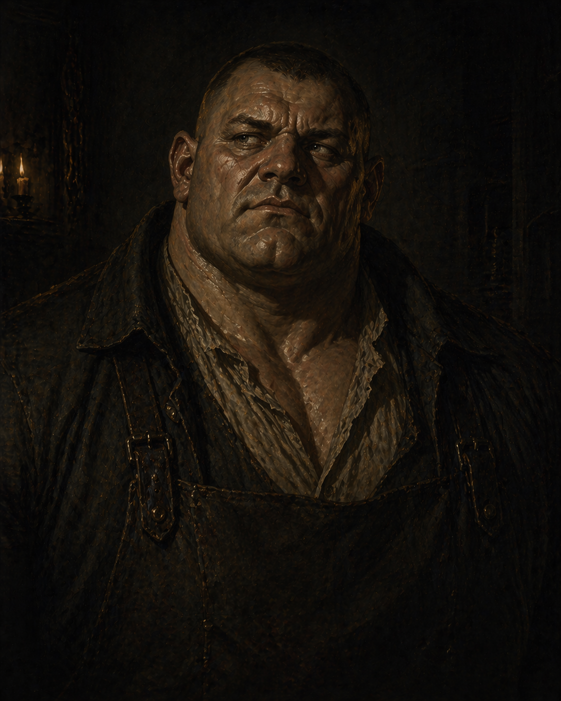
The Unseen
Notes: A criminal secret society operating through intermediaries � no agent knows what the others are doing. Opposed to The Hive, which means structurally opposed to the Antiquarians. Rook is their known operative. The Wraiths' allies include Cabbies � and Rook works as a cabbie. Possible overlap worth watching. Possible Unseen influence in the current Crows leadership situation.

Threats & Investigators
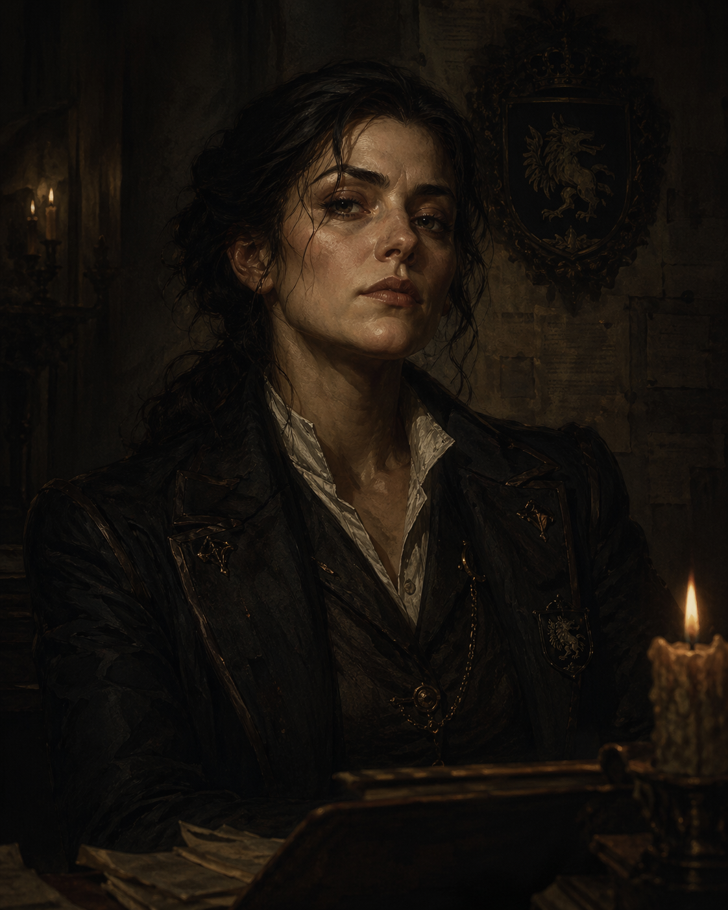


House Scurlock � Allied (For Now)


The Ash-Hand Compact
Setarra’s distributed network of cells. Most members believe they are pursuing justice or historical truth — they are lied to. Harrow spent time inside this network as a mid-level operative and can brief the crew on how it operates. See the full Compact page.
Goals: Secure the Drowned Ledger — Identify and maneuver a living compact signatory — Gather ritual components for harbor compact transfer — Expand Setarra’s leverage through smaller contracts across the city
Allies: Setarra, Dirmot (equipment supplier), compromised officials, desperate debtors
Foes: Anyone between them and the Ledger — currently the Antiquarians
Notes: The Meridian Circle is their current active front, currently working Jared. If the crew hits one cell, the whole does not collapse.
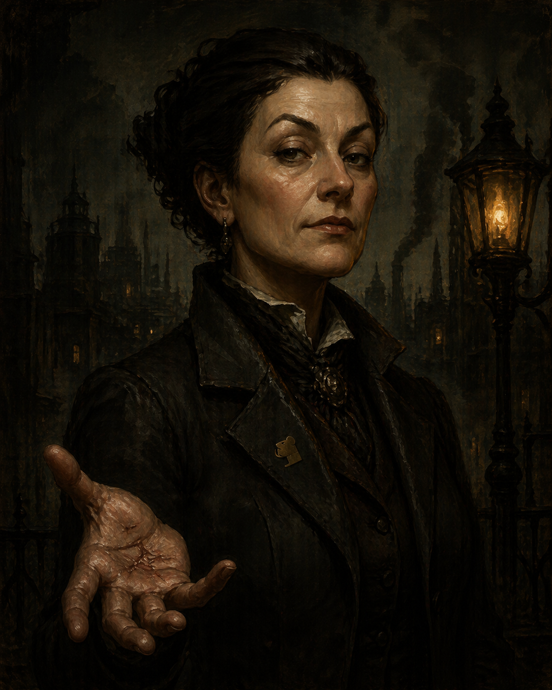
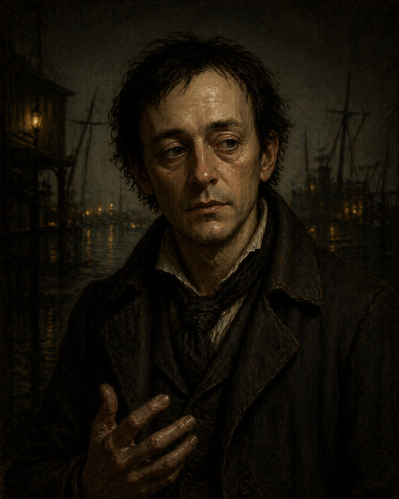
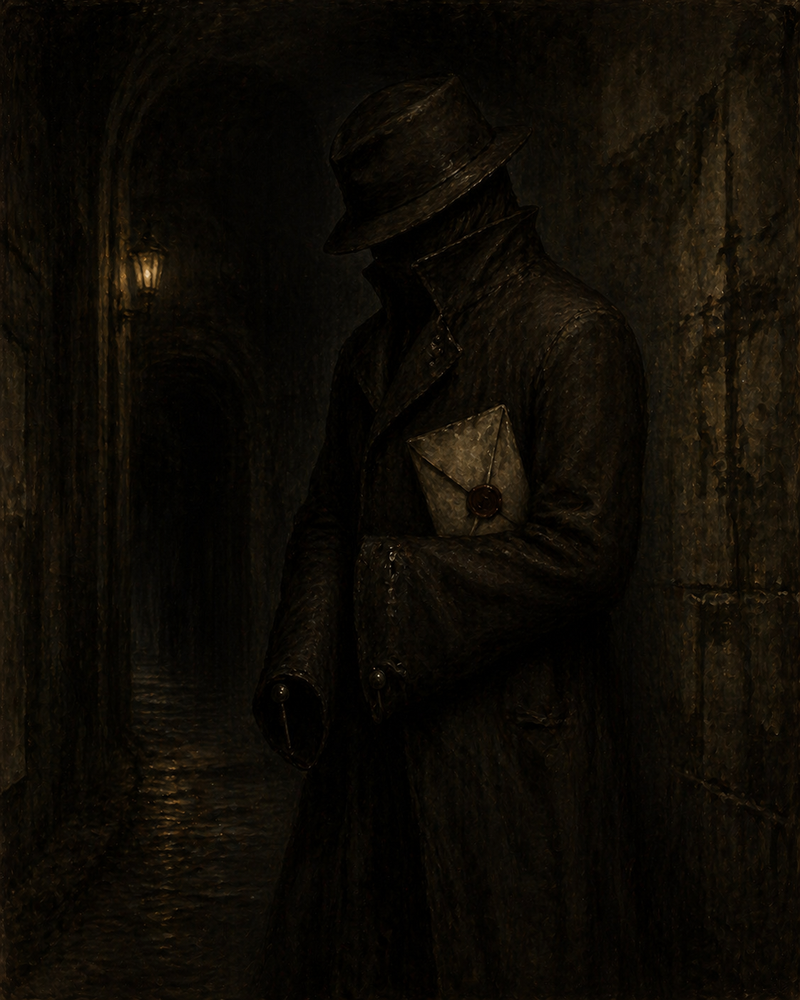
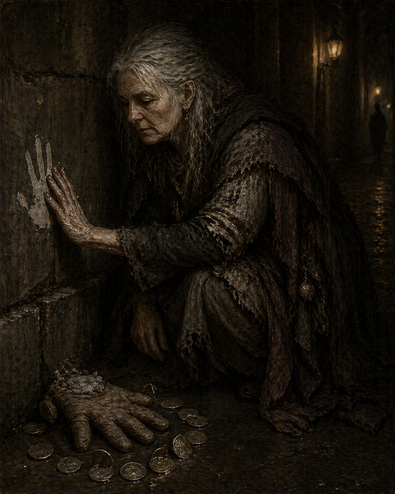